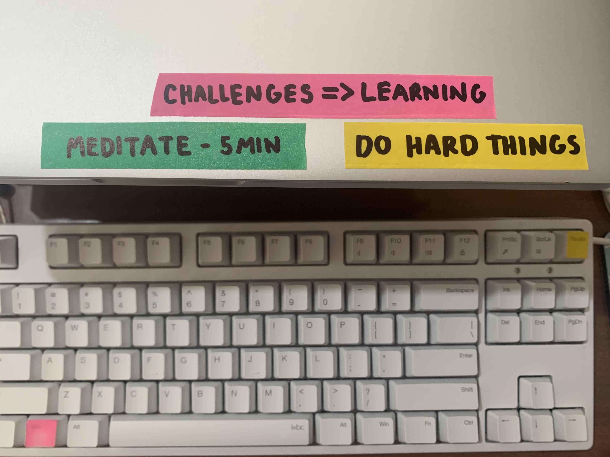

Neuroplasticity & Growth Mindset
cultural blog
21 February 2022
Neuroplasticity is the idea that our brains aren’t static and have the ability to learn new things by creating new connections when we learn new things. The more we engage with making these new connections the more we are able to make new connections in the future. Basically, the more you learn new things the more you are able to learn new things - what an exciting cycle 🙂
Learning that your brain is malleable and you have the ability to change it and get better at things you thought otherwise impossible is empowering. It shows you that those things you had written off as ‘not for me’ are possible and makes practice and struggle worth it because you know that by persisting through that learning struggle you are creating new connections in your brain which will yield positive results. It leads to better memory, more effective learning, and enhanced cognitive abilities.
I will use this idea to practice things I am not good at yet - things I struggle with but want to get better. In particular I will focus on practicing being assertive by practicing those things I feel uncomfortable doing and saying and while I may feel uncomfortable doing so I am rewiring my brain so it becomes more natural to access those new neural pathways.
I am also keeping a list of what the two areas in programming I am struggling with most at the moment and doing extra practice in those areas - these areas the practice is a lot harder because I am still trying to wire my brain to make these connections but that’s what makes it so important. The idea is taking my two biggest weaknesses and turning them into my biggest strengths. When I feel more confident in these areas I will update my list with new areas I need to work on. By always working on what I am struggling with most I am learning new things and not letting myself fall back on things I know how to do just because it makes me feel good.
I will also continue learning new things - related or unrelated to the course. For related things - like learning more about computer science concepts - it will help my mind create new connections to what I am learning in class and put things into perspective. And learning unrelated things will help me to keep my mind always creating new pathways and staying active so I keep the learning muscle strong and don’t lose any neuroplasticity as I get older. I will practice increasing my neuroplasticity using the following techniques:
- Seeking novelty - doing new things things which challenge the brain
- Challenging myself (challenges can be defined as something frustrating but achievable)
- Practice - in whatever area I am working on as it strengthens neural existing pathways
- Listen and talk to people about new ideas - be open to them. By doing this hopefully you come away from a conversation thinking you learnt something or something is interesting and you try to remember it - even little things like this change your brain
- Reading
- Making art
I found the transcript of this podcast with David Eagleman super interesting - my favourite quotes were:
- “And, yes, even during the course of this conversation you are already a slightly different person than you were at the beginning of the conversation, just because hopefully something I said, you thought, “Oh, that’s interesting, I’m going to remember that,” or something, and then your brain is now different.”
- “the pro was so good and just killing it on all fronts, and so the assumption would be, “Wow, their brain must be using more energy,” but it’s exactly the opposite, their brain is actually using almost no energy, and the reason is they have burned that skill into the circuitry of their brain”
Growth Mindset is taking on the belief and practice that our skills, abilities and intelligence are not static - that we have the ability to strengthen and improve in any of these areas. It is basically like understanding that our brains have neuroplasticity and then acting in a way in which fosters this belief. Very much like understanding neuroplasticity it is so important because if we believe we can get better at something we have incentive to push ourselves to try harder things because we know it is for a purpose - that with the struggle of trying new things we can improve our skills. Growth mindset is a practice not just a state of mind - by only accepting the idea without using growth mindset techniques you are likely entering the dangerous territory of ‘false growth mindset’ - we need to engage with putting in effort, practicing new strategies and seeking feedback.
While researching growth mindset I was interested to discover the unintended side effects praising people on their intelligence or skills can have. Praising abilities can lead to a fixed mindset - we build up this idea of ourselves from the praise (or criticisms) we get and to make us feel like we are staying in line with those ideas we don’t let ourselves try hard things because it could lead to failure. Worrying about looking smart is the demise of learning - this is because you are unlikely to take on challenges that you might fail at and because less energy gets put into learning than keeping up appearances.
I was also surprised to find that even if you are applying a growth mindset the environment you are working in can make it difficult to execute if it is full of fixed-mindset triggers - whether that is people or a company that makes it hard to practice growth-mindset by creating environments where talent is rewarded above all else, collaboration and ideas aren’t respected, feedback isn’t given in constructive ways and people aren’t given the chance to learn.
While at Dev and in life in general I will practice a growth mindset by practicing different techniques, including:
- Embrace challenges, failure and being uncomfortable while learning - challenges are learning opportunities and the best way to get better at something
- Practice praising myself and others on actions rather than skills
- If I am struggling with something remind myself that the difficulty I am having with it is a good thing and leading to more learning
- Reflect on learning sessions - especially the parts that were hard or that you failed at - these are where the best learnings come from
- Seek tangible feedback - whether from others, journalling and testing out ideas
- Embrace the word ‘yet’ - remind myself if I am struggling I just can’t do it yet
I found this article about the limitations of growth mindsets really interesting. It debates whether or not it can create a significant increase in one’s ability to learn. The reason I found it so interesting is because it goes deeper into the idea that mindset is important but without putting it into practice you aren’t tapping into its potential.
Neuroplasticity and growth mindset are very similar to one another and both put a focus on understanding that you have the ability to learn new skills and improve on different traits through practice and doing difficult things. In my own learning plan they are specifically relevant to working on my weaknesses - these are the things that make me feel uncomfortable when practicing or learning and so need to be focussed on the most - because that is where I am doing the most learning. It has also reminded me of the importance of self talk - and reminding myself of these important ideas when things are hard - I will make some little notes to remind myself so they are in view as I work.